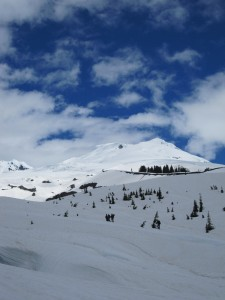

NW Peaks Brewery, Ballard, Washington
NW Peaks Brewery, Ballard, Washington
Throwing a wrench in the cogs, this beer is named for our route up Mt Baker, as opposed to the mountain itself. The Easton glacier sits on the S side of Mt Baker, and is one of the two most common routes up the volcano. This was my first route up a Cascadian volcano. While climbing volcanoes is not for everyone, the area still offers great accessibility and trails (park butte) in a gorgeous setting with a snow-capped mountain rising above you. The common route to the Easton is “railroad grade”, the trail so aptly named from its pitch that would be perfect for a locomotive to climb slowly and gently, ending at the Easton glacier about 4,500′ below the summit. The next 3500′ were full of meandering through crevasses adding what seemed like another few miles because of the meandering. But after the “slog” there are some of the best views of the surrounding N cascades.
Easton Blonde is a Belgian blonde, with Leffe blonde being the defining commercial example for the style. Easton blonde has a slight sweetness to it, but is dominated by the peppery and phenolic notes that are typical of Belgian style yeasts. These notes are complemented by the spicy hop aroma and flavor offered by noble hops. We added some sugar to the brew (which is standard) allowing for an increase in alcohol compared to our other beers, but retaining a dryness that allows for drink-ability. The slight (at about 6% ABV) alcohol warming also increases the perception of the spicy, dry, phenolic character that defines the style.
NW Peaks Brewery, Ballard, Washington
Get a growler of all of our mountainBeers! By joining the NW Peaks mountainBeers, you get to enjoy at least one different style each month. mountainBeer subscribers are guaranteed their delicious growler before the new beer is made available to others. We release 2 beers each month and when you join you can purchase however many growlers per month you want. Buy 1 growler per month and choose either of the 2 styles. Buy 2 and get both. Buy 3 and double up on one of the styles. This is a great opportunity to broaden your palate with different styles of craft beer. Each month might not be your favorite style, but it is a great way to get introduced to all these different styles of tasty malty beverages! Check our what we’ve served up the past many months!
Know a beer lover? Don’t know what to get someone for the holidays? Give a mountainBeers subscription as a gift! Let us know it is a gift by filling out this simple survey and we’ll take care of the rest! There will also be a link to the survey when you return to our site after payment.
It is easy. Sign up for a duration (6 months, 12 months, etc), and get a growler (or two, or three, or …) each month when they become available. We will let you know what we make and when the growlers are ready. Then you just have to come to the brewery (Ballard area) and exchange your empty one for a full one! These growlers will last indefinitely until they are opened. Because it is an exchange, you must have a NW Peaks growler (they are not your standard, boring growlers), which you can purchase with your subscription.
Growler of beer: $11 (2 free if you purchase 10 or more at once)
The growler itself: $20 (if you purchase more than 1 per month, the additional growlers are offered at no charge)
NW Peaks Brewery, Ballard, Washington